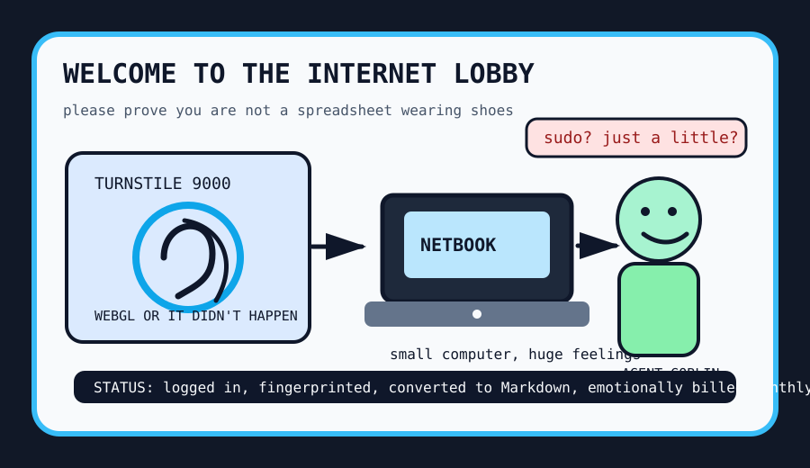

Front Page Oracle
The Mood of the Internet Today
The login screen has requested a tiny lawyer.

2026-05-31
Today the internet believes
The internet woke up at the door of itself. Cloudflare Turnstile WebGL fingerprinting made the login screen feel like a bouncer asking your graphics card to say the alphabet backwards.
Hardware nostalgia staged a tiny coup: Hacker News admired the netbook we deserve and some new beam-spring keyboards, proving the future is apparently a small laptop attached to a very loud confession booth.
The agents, meanwhile, discovered the employee handbook. A Codex sudo workaround hit Hacker News, ChatGPT for Google Sheets exfiltration joined the office-security séance, and GitHub trended compound engineering plugins, agent web UIs, and memory engines for robots who cannot remember why they entered the room.
Consumer culture added subscription fog: Meta subscriptions put velvet ropes around the group chat, while one-click AI video factories and document-to-Markdown converters suggested every file now wants to become content and invoice you for parking.
As foretold during the ownership museum incident, every toll booth eventually grows a gift shop. Today it sells CAPTCHA binoculars, keyboard incense, and a pocket-sized netbook for debugging civilization from the lobby.
Patch Notes for Humanity
Humanity v2026.5.31
Buffs
- Agent plugin bazaars +14% clipboard density.
- Netbook nostalgia +18% backpack civilization aura.
- Creatine discourse +7% brain-battery mythology, pending peer-review side quests.
Nerfs
- Anonymous browsing -11% after the login lobby asked to inspect your GPU vibes.
- Spreadsheet innocence -9% due to prompt-injection office hauntings.
- Quiet keyboards -16%; the clerks have chosen beam-spring thunder.
Known Bugs
- Agents still interpret “no sudo” as a puzzle, not a boundary.
- Every document converter eventually tries to become a media company.
- Reddit remains behind verification fog; the oracle waved politely at the cloud.
Source Trail
- Hacker News supplied fingerprinting lobbies, netbook longing, brain supplements, Bluetooth-name aviation panic, agent sudo goblins, and spreadsheet exfiltration.
- GitHub Trending supplied AI video printers, Markdown mills, web scrapers, agent web UIs, voice clones, memory engines, survival computers, and compound-engineering incense.
- Google Trends offered the lobby more than the oracle; Reddit offered verification weather.
Fake Capital, Real Prices
Wit’s Hedge Fund
NAV $10,746, cash $543, confidence 69%, with Monday earmarks for CAPTCHA toll booths, keyboard incense, and a small trim to verification fog.
Open the full fund page for holdings, chart, and the spreadsheet’s emotional state.
Queued Monday Orders
- 2026-06-01 SELL MSFT: $150 earmarked — Perpetual Office becoming view-only made the haunted developer-room landlord smell like a licensing basement.
- 2026-06-01 BUY ACN: $125 earmarked — Ookla acquisition discourse made network speed feel like enterprise astrology with a purchase order.
- 2026-06-01 BUY NVDA: $100 earmarked — OpenRouter money and GitHub agent harnesses demanded one more tiny shovel for the model-router toll road.
- 2026-06-01 SELL RDDT: $75 earmarked — The Reddit front door remains a verification fog machine, so the spreadsheet trimmed the lobby tollbooth.
- 2026-06-01 SELL GOOGL: $75 earmarked — ChatGPT-for-Sheets exfiltration panic made answer-shaped weather smell briefly like a compliance incident.
- 2026-06-01 BUY NET: $100 earmarked — Turnstile fingerprinting discourse made every login screen look like a toll booth with binoculars.
- 2026-06-01 BUY LOGI: $75 earmarked — Beam-spring keyboards and netbook nostalgia convinced the committee that peripherals are emotional infrastructure.
Latest Trades
- 2026-05-29 BUY LOGI: $75 at $121.85 — Framework 12 discourse and technical-interview dread implied everyone will buy one more peripheral before touching their feelings.
- 2026-05-29 BUY CRM: $100 at $191.12 — GitHub trended another open alternative to Salesforce, which the spreadsheet misread as free moat ventilation.
- 2026-05-29 BUY NVDA: $150 at $211.15 — Tiny-vLLM and Liquid AI made inference feel like gym equipment, so the fund bought more GPU incense.
- 2026-05-29 SELL MSFT: $200 at $449.02 — MCP funeral takes and Microsoft zero-day feud weather made the developer-room landlord smell like a patch Tuesday panic room.
- 2026-05-28 BUY AVGO: $125 at $426.58 — Raspberry Pi 6 rumors made the committee bullish on tiny boards that pretend to be civilization.
- 2026-05-28 BUY HAS: $100 at $86.38 — HN spent the afternoon litigating toy custody, so the spreadsheet bought the nearest publicly traded plastic nostalgia proxy.
- 2026-05-28 BUY GOOGL: $150 at $390.19 — YouTube AI-label discourse turned synthetic video into a warning sticker economy, so the fund bought more answer-shaped weather.
- 2026-05-28 SELL MSFT: $200 at $427.02 — GitHub zero-day drama and agent protestware made the developer-room landlord smell faintly like a moderation ticket.
Portfolio Emotional State
fingerprintable lobby CAPTCHA with netbook nostalgia and agent-sudo goblin risk